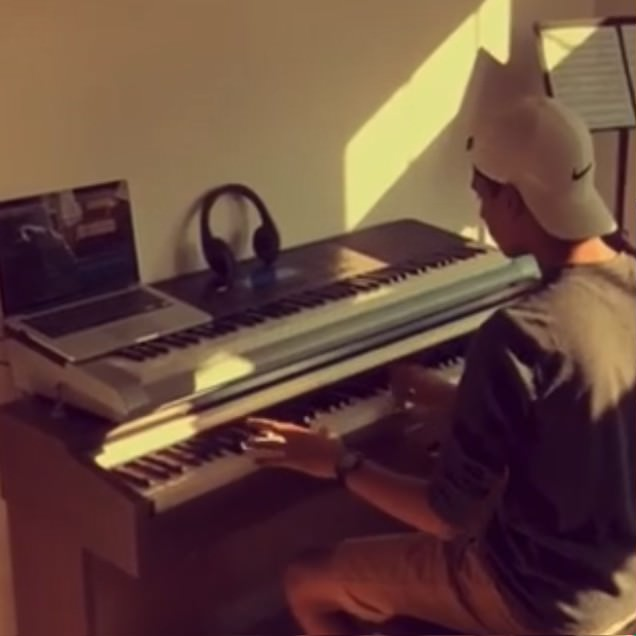

My Music
Something you may not know about me is that I am very interested in music and production.
I was trained in classical piano outside of school, and played the flute in the school jazz band until high school.
After years of concerts and regional/state showcases, I decided to venture into composition and production. I started by making acoustic covers of popular songs, and soon I learned to use software such as FL Studio, a digital audio workstation.
Focusing mostly on trap and RnB styles, I work with artists to provide them with instrumentals. Here's a video of me at the studio in Philadelphia, where a friend is recording over a beat I produced.